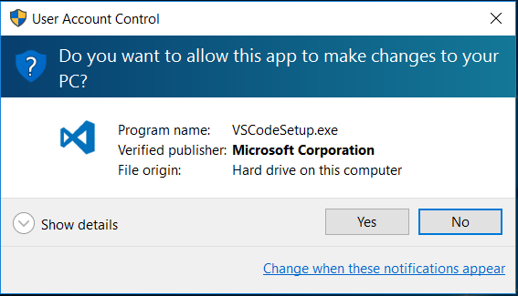
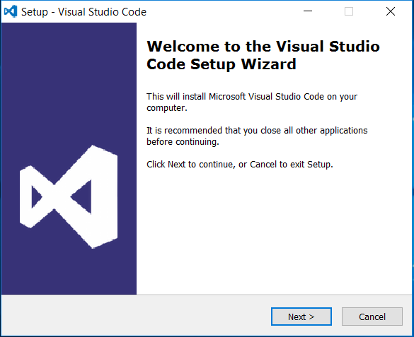
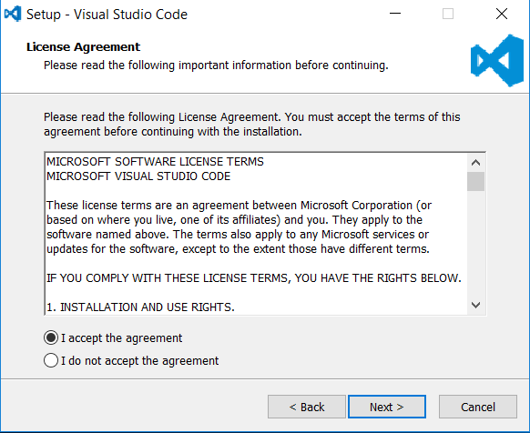
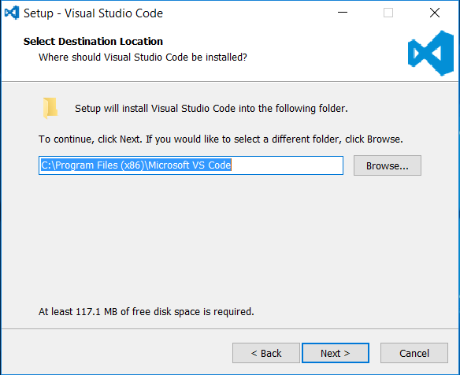
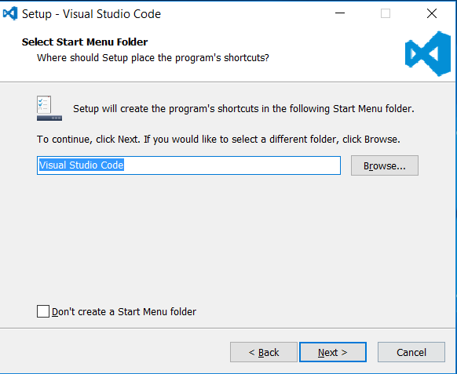
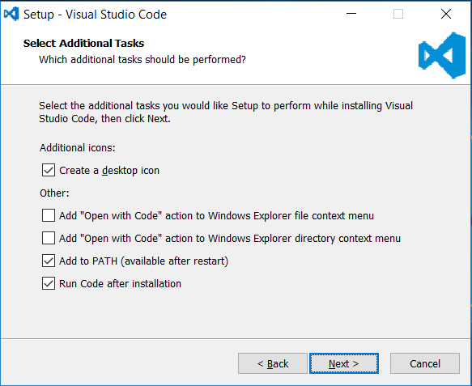
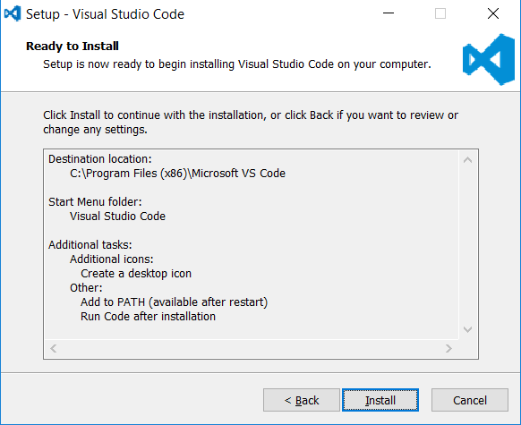
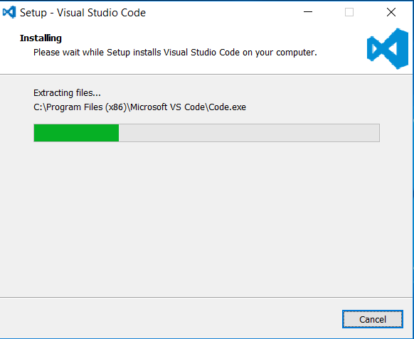
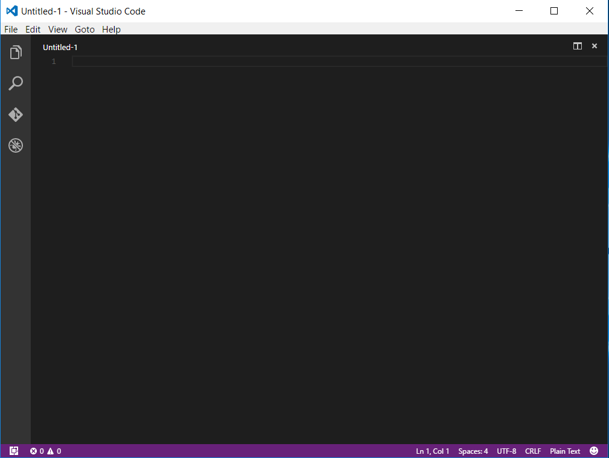

Installing Visual Studio Code on Windows
-
Download installer
Go to Visual Studio Code web site and click "Download for Windows"
If "Download for Windows" button doesn't show in big on the left of the page navigate to the bottom that has all platform download buttons
-
Run the installer
Double-click on the installer downloaded in the previous step
Allow changes
Click "Next" in "Welcome"
Change the radio to "I accept the agreement" and click "Next" in "License Agreement"
Select install location and click "Next"
Select Start Menu options and click "Next"
Select installation options and click "Next". Leave "Add to PATH (available after restart)" checked so Visual Studio Code can be called from the Command Prompt.
Confirm installation options and click "Next"
The actual installation takes place...
And we're done!
And it opens...
